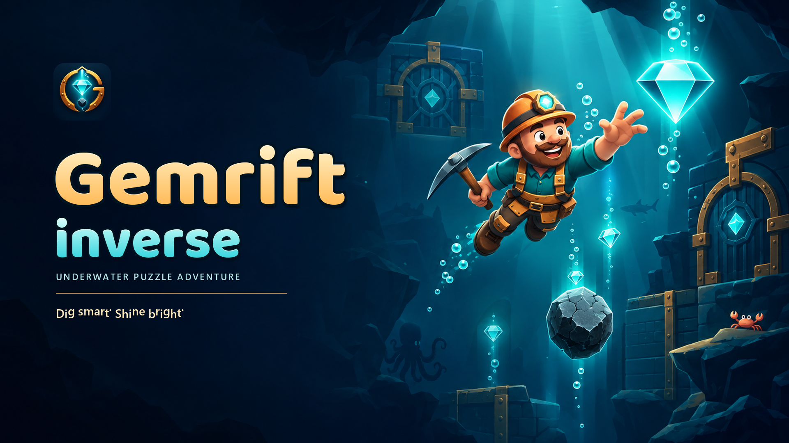
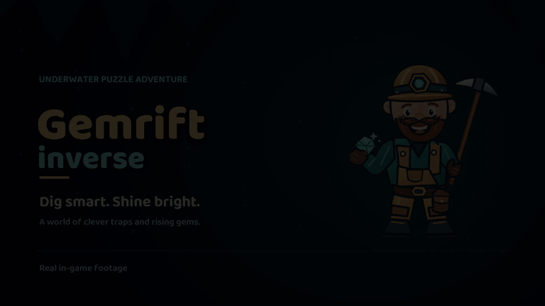

Inverse Crystal Gravity
Heavy rocks crash downward and roll off rounded brick ledges, while freed gems, black pearls, and waterborne mines float straight toward the ceiling.
BOULDERS DOWN · CRYSTALS & MINES UPOut Now for Windows · 215 Proved Caves
Dig smart · Shine bright.
Plunge with Milo Coppercap into an arcade underwater puzzle adventure where heavy boulders crash downward, freed crystals and buoyant mines shoot toward the ceiling, and every breath of air shapes your route.

Real gameplay across flooded cisterns, buoyant mine locks, telegraphed predator ambushes, and chain-reaction blasts—scored by the original 128 BPM chiptune theme Pixel Tides.

Every cave runs on an exact 180 ms deterministic simulation. Water never drains or evaporates—so every silt plug you clear, mine you release, and boulder you drop obeys crystal-clear rules.
Heavy rocks crash downward and roll off rounded brick ledges, while freed gems, black pearls, and waterborne mines float straight toward the ceiling.
BOULDERS DOWN · CRYSTALS & MINES UP60–85% of every cave is submerged. Digging blue-tinted silt opens flooded paths without draining pools, while steel-capped air pockets instantly refill your tank.
OXYGEN-AUDITED ROUTESUnlimited lives, zero frustration. Press R once—whether Milo died or wedged a rock—to rewind to the last clean checkpoint with dug paths & gems kept, or R+R for tick 0.
INSTANT CHECKPOINT RECOVERYJump into Show me the game play for an interactive tutorial cave, or unlock the toolbar Bulb after 9 tries on any cave for step-scrubbable live solution playback.
430 BUNDLED JSON PROOFSCaptured directly at 1920×1111 desktop resolution with the high-contrast color-coded capsule toolbar, predator telegraph brackets, and procedural cave palettes.
Compact U-cistern opener with air domes, rising crystals, and a Giant Crab ambush pool.
Flooded steel corridors where breaking cardinal sightlines dodges a 1.5× Shark sprint.
Twin pressure bells pairing rising naval mines with elevated counterweight rock shelves.
3×3 blast action alongside Octopus tentacle lane warnings and multi-habitat batteries.
Tight 10-second deep-cave oxygen budgets bridged by dome-capped breathing vaults.
High-IQ late-campaign architecture where every blast door demands exact causal order.
Instant keyboard-first launch with gold Start action, tutorial button, and numbered 1–5 difficulty slider.
Step-by-step choreographed cave teaching inverse gems, air pockets, mines, and R rewind.
30 locales, cave selector, High Contrast, Reduced Motion, Remixed Creatures, and Sprint Caves.
Localized mechanic cards, creature guides, and shortcut badges available anytime with F1.
Five coastal predators roam water channels and dry shelves from the opening caves, joined from Cave 21 onward by three deep-sea specialists—and optional Remixed Creatures mode reinvents the core five with wild arcade powers.
Scuttles along right-hand submerged walls. Spots Milo within 5 cells, raises snapping claws for 4 ticks, lunges 2 cells, and rests harmlessly while spent.
Remix — The Grid Locker: Fuses loose boulders in place or shoves them horizontally! Trap it in a 1×1 tunnel and push a rock sideways for a 3×3 Dirt Diamond Cage.
Patrols straight water channels. Sighting submerged Milo within 12 cells triggers a sonar warning tick followed by a 1.5× sprint to his last sighted cell.
Remix — The Scent Tracker: Hunts Milo's 10s digging sediment trail at double speed! Dropping a boulder bursts it into Chum that lures other enemies for 15s.
Hugs left-hand chamber walls and holds still while illuminating its cardinal tentacle lanes for 3 ticks before striking—pulling rocks, gems, or mines closer.
Remix — Camouflage Mimic: Disguises as a pulsing diamond or rock! Trick it into revealing itself, step back, and drop a boulder for a 3-item Roulette Drop.
Patrols dry floors and drops when support vanishes. Spots Milo within 8 cells on its row, rears up with a 3-tick roar, and charges 2 cells/tick until crashing stunned.
Remix — The Icebreaker: Roars every 5s to shake loose unstable rocks! Drop a 3-boulder cascade onto it to freeze every screen enemy into pushable solid ice.
Guards every cave in dry passages and hinted sleeping dens. Crouches with glinting eyes for 4 ticks, then pounces up to 3 cells across land or water to freeze Milo.
Remix — Neon Flash Freeze: Leaves speed-halving frost tiles and flashes 5s reversed controls! Crush sideways to ignite the map-revealing Prism Light Show.
Swells for 3 turns when submerged Milo nears, then inflates into a rock-solid 3×3 block for 28 turns—catching falling boulders until it deflates underneath them!
Traces submerged silt borders, flickers for 3 turns when silt opens, then electrifies connected pools for 17 turns. Dropping a rock clears silt cells into gems!
Drifts slowly upward through flooded shafts instead of hugging walls. Time a falling boulder down its column to pop it without a terrain blast into a shower of pearls!
Every single cave includes open ambush rooms where Milo steps into view, reads the predator's visual & audio telegraph, and climbs clear before the strike lands—setting up the boulder drop while scoring bonus style points.
Each cave is generated from its own title—shaping its silhouette, stone pattern, contraptions, and flood depth—then proved tick-by-tick in the real simulation and ordered smoothly from #1 to #215.
Slower pace; about 25% more reaction time and generous oxygen reserves.
Play in the recommended complexity order or jump straight to any cavern from #1 to #215. Difficulty never adds or moves enemies—and clearing a cave with zero deaths stamps a sparkling ✦★ star beside your best score.
Toggle Sprint caves in Settings to turn every 10th slot (10, 20, … 210) into a single-screen 45-second chain-reaction highway with Chaos Combos and triple score!
Flip on Remixed creatures for redesigned predator boss mechanics, 3×3 breathable air pockets from popped bubbles & mines, close-call swim boosts, and dedicated remix leaderboards.
Responsive input buffering keeps rapid key taps crisp without ever advancing gravity early—backed by low-vision HUD contrast, 30 localized languages, and full keyboard & gamepad remapping.
Every gameplay action and menu shortcut is customizable in Settings → Controls. By default, the clock is relaxed (reaching zero only ends the time bonus; toggle Strict clock anytime).